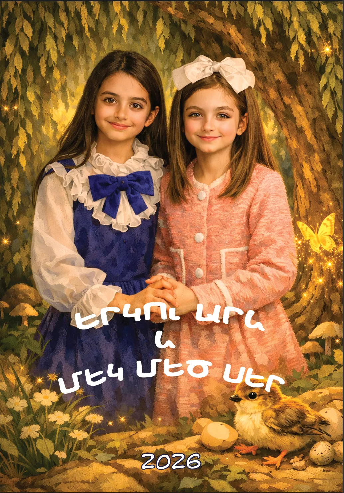
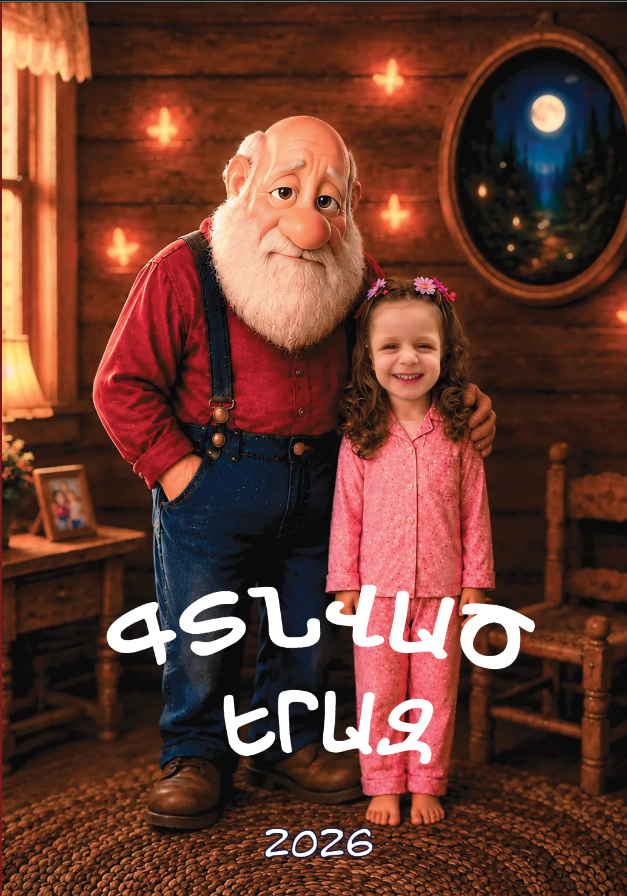
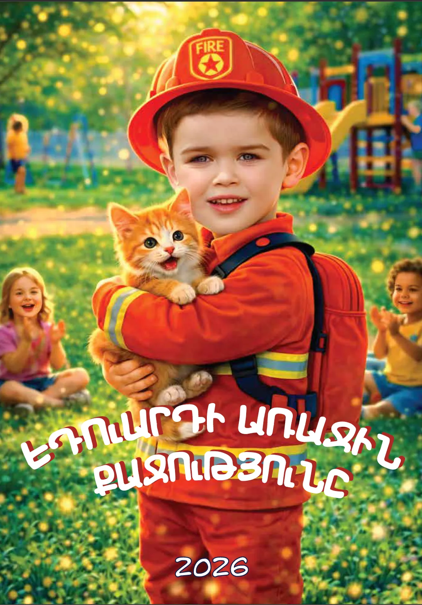
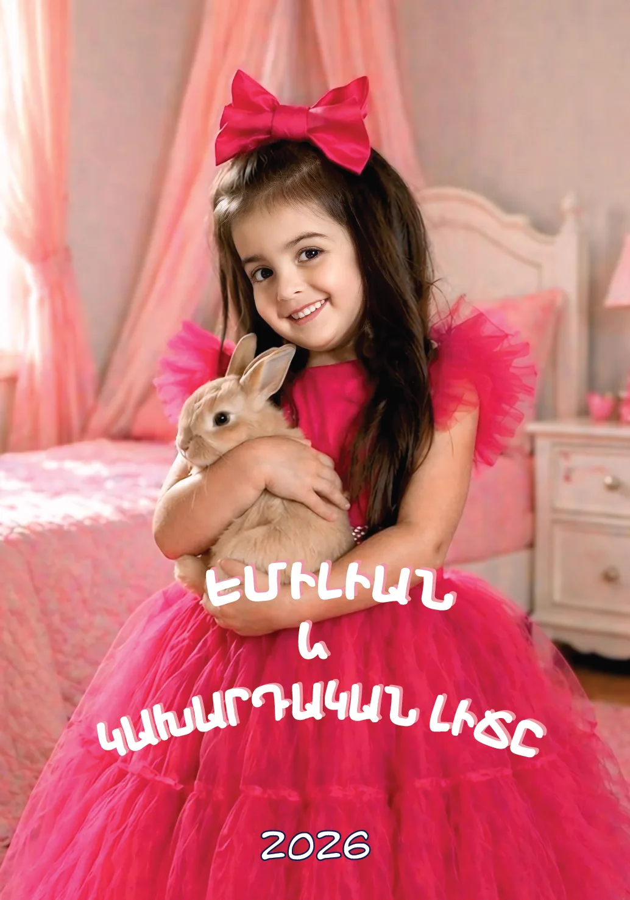
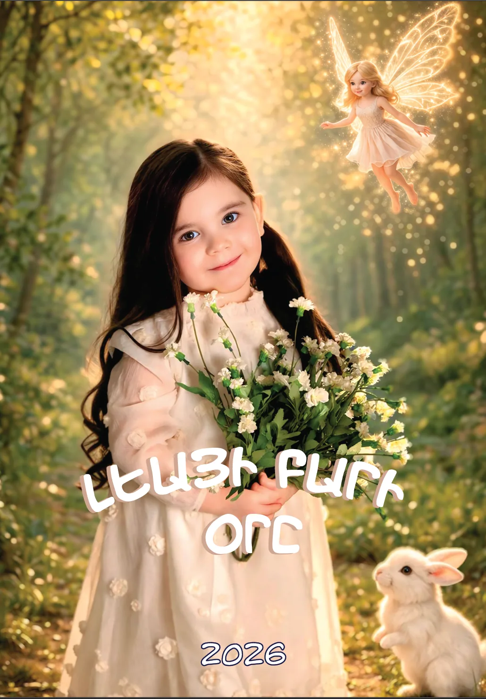
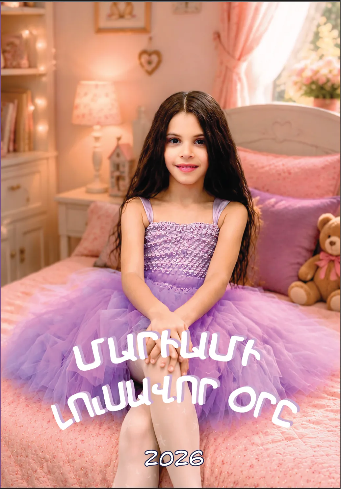
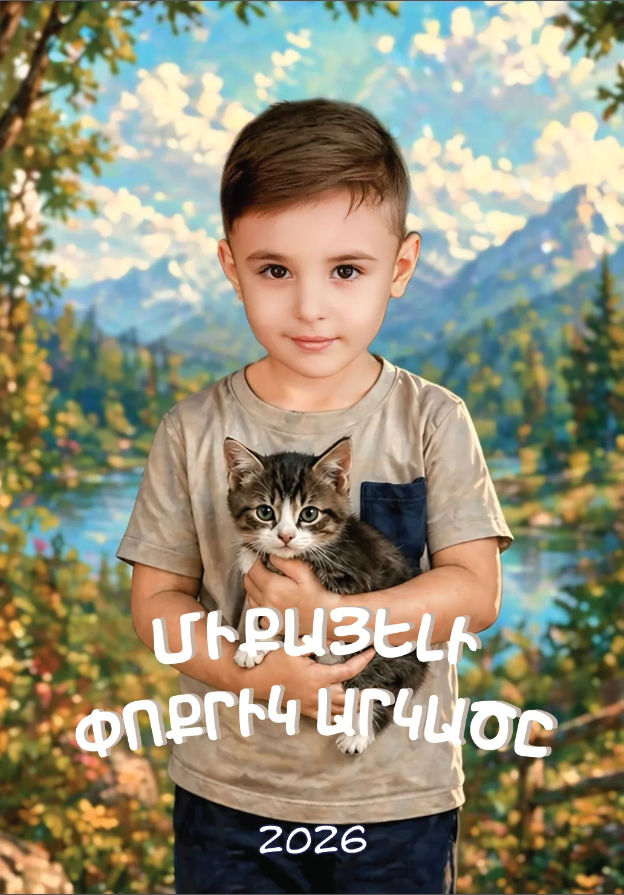
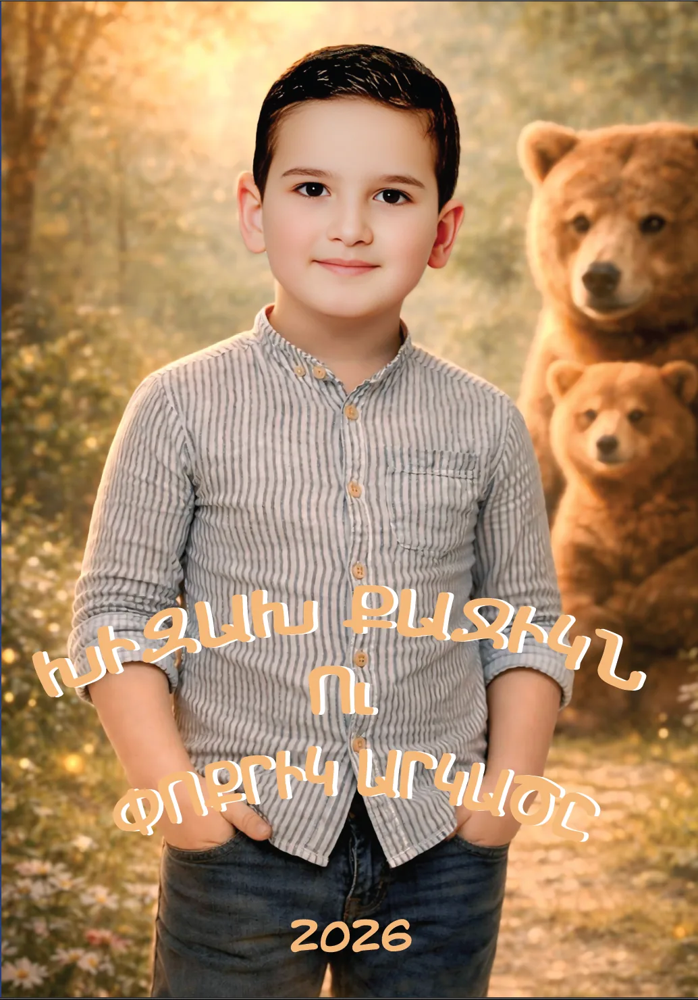
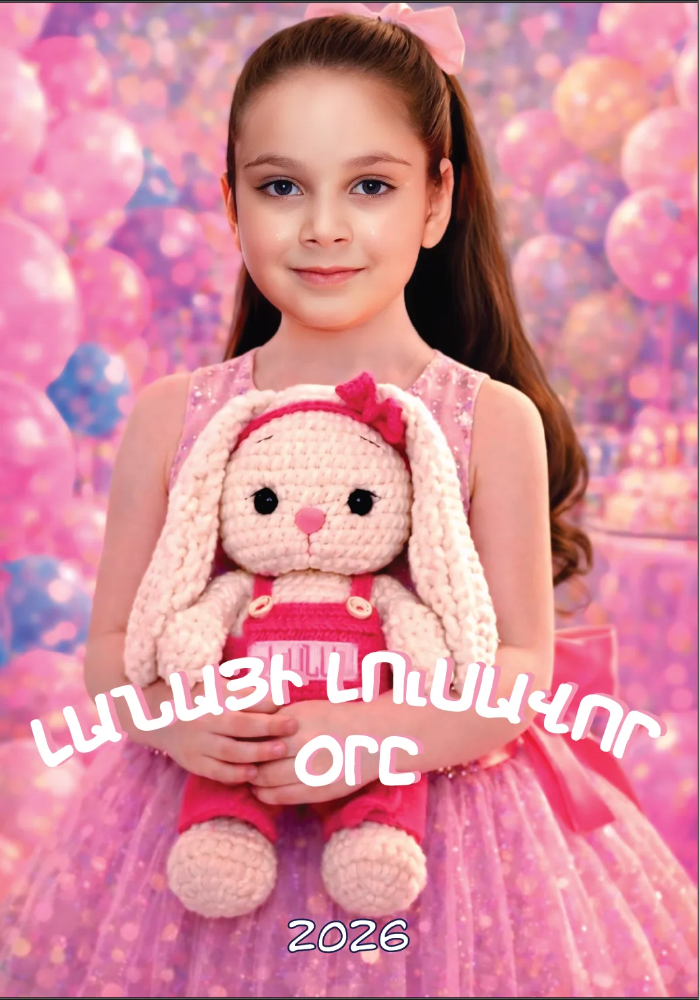
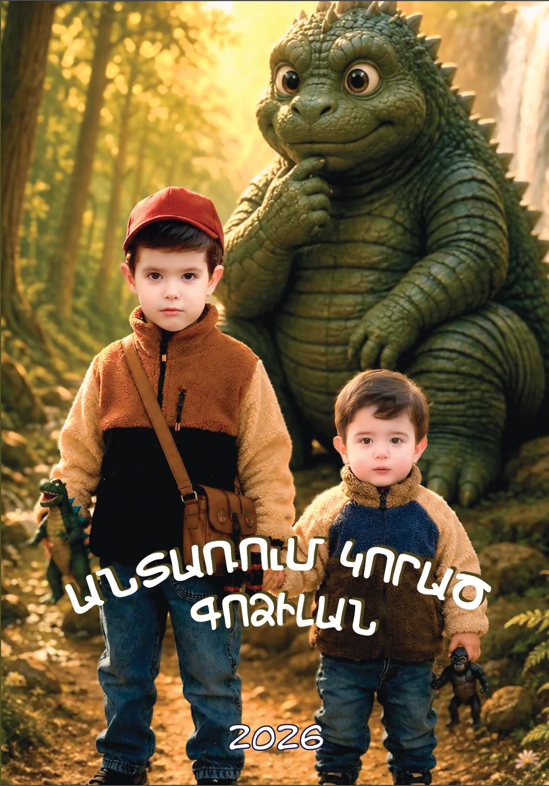

Պատրաստի հեքիաթ և նկարազարդումներ՝ երեխայի լուսանկարներով։
9,500 դր․
Պատրաստի գիրք + NFC
Պատրաստի գիրք՝ մուլտֆիլմային թվային տարբերակով։
11,000 դր․
Անհատական գիրք
Հեքիաթը ստեղծվում է երեխայի հետաքրքրությունների հիման վրա։
14,500 դր․
Առաջարկվող
Անհատական գիրք + NFC
Անհատական հեքիաթ և մուլտֆիլմային տարբերակ NFC-ով։
17,000 դր․
Պատրաստի հեքիաթներ
Ընտրեք հեքիաթի տարբերակը
Կարդացեք հեքիաթի կարճ հատվածը, նայեք մաքուր preview պատկերները և ընտրեք այն տարբերակը, որը ցանկանում եք պատվիրել։

Երկու արև և մեկ մեծ սեր
Մի արևոտ օր, երբ Մարտան և Մարիան խաղում էին այգում, նրանց դիմաց հայտնվեց մի անսովոր ոսկեգույն թիթեռ։ Այն կարծես ինչ-որ տեղ էր կանչում նրանց... Աղջիկները հետևեցին նրան՝ չիմանալով, որ ընդամենը մի քանի քայլ հետո իրենց կյանքում սկսվելու էր մի կախարդական պատմություն, որը փոխելու էր ամեն ինչ…

Գտնված երազ
Գիշերը գալիս է շատ դանդաղ, կարծես վախենում է արթնացնել աշխարհը։ Պատուհանից ներս է սահում լուսնի փափուկ լույսը, իսկ փոքրիկ Անգելինան նստած է անկողնում ու գիրք է կարդում գունավոր թիթեռների մասին։ Բայց երբ պապիկը խոստովանում է, որ վաղուց կորցրել է իր քունը, Անգելինայի սրտում ծնվում է մի ցանկություն, որը նրան տանելու է մի կախարդական ճանապարհորդության…

Էդուարդի առաջին քաջությունը
Մի լուսավոր առավոտ արևի շողերը մեղմ սահում են Էդուարդի սենյակի պատուհանից ներս։ Նա հպարտությամբ հագնում է իր կարմիր հրշեջ գլխարկն ու փոքրիկ ուսապարկը՝ պատրաստ լինելով նոր արկածների։ Սակայն նա դեռ չգիտեր, որ հենց այդ օրը մի փոքրիկ օգնության կանչ իրեն ու եղբորը՝ Դավիթին, տանելու էր մի փորձության, որտեղ պետք էր ցույց տալ իսկական քաջությունը…

Էմիլան և կախարդական լիճը
Լուսաբացի մեղմ շողերը կամաց սահում են պատուհանի միջով ու լցվում փոքրիկ Էմիլիայի սենյակը։ Այսօր ինչ-որ յուրահատուկ օր է․ նրա սիրտը լի է սպասումով, կարծես նոր արկած է սպասվում։ Սակայն նա դեռ չգիտեր, որ մի կախարդական լիճ, որը զգում է մարդկանց սրտերը, պատրաստվում էր կանչել իրեն և փորձության ենթարկել նրա խիզախությունն ու հավատը…

Լեայի բարի օրը
Առավոտը բացվում է խաղաղ ու լուսավոր։ Արևի ոսկեգույն շողերը մեղմ սահում են պատուհանից ներս և լուսավորում Լեայի փոքրիկ սենյակը։ Հենց այդ օրը, երբ օրացույցում կարմիրով նշված ամսաթիվն էր, օդում հնչում է մի խորհրդավոր ձայն, և նրա առջև հայտնվում է փոքրիկ փերին։ Բայց Լեան դեռ չգիտեր, որ այդ կախարդական հանդիպումը նրան տանելու էր մի բարի արկածի, որտեղ յուրաքանչյուր քայլը դառնալու էր իսկական փորձություն…

Մարիամի լուսավոր օրը
Արևի ոսկեգույն շողերը կամաց-կամաց սահում են դպրոցի լուսավոր դասասենյակով, իսկ Մարիամը հուզմունքով պատրաստվում է ավարտել իր ամենակարևոր նկարը՝ այն, որը ներկայացվելու է ցուցադրությանը։ Նա վստահ է, որ այս անգամ ամեն ինչ պետք է ստացվի... բայց հենց առաջին վրձնահարվածներից հետո հասկանում է, որ իրեն սպասում է մի փորձություն, որը կփոխի ոչ միայն իր նկարը, այլև ինքն իրեն…

Միքայելի փոքրիկ արկածը
Առավոտյան արևի մեղմ շողերը սահում են պատուհանի միջով ու լուսավորում Միքայելի սենյակը։ Այսօր նա որոշել է ինքնուրույն բացահայտել աշխարհը՝ քայլել դեպի քաղաքի այգին, լսել նրա ձայները և զգալ, թե ինչ է նշանակում պատասխանատու լինել։ Բայց Միքայելը դեռ չգիտեր, որ այդ սովորական զբոսանքը շուտով վերածվելու էր մի փոքրիկ, բայց կարևոր արկածի, որը նրան նորովի էր սովորեցնելու սիրել ու գնահատել իր հայրենիքը…

Խիզախ Քաջիկն ու փոքրիկ արկածը
Արևը նոր է բարձրանում, և իր ոսկեգույն շողերը մեղմ լցվում են Քաջիկի սենյակ։ Այսօր նա իրեն ուժեղ ու համարձակ է զգում և որոշում է սկսել օրը փոքրիկ առավոտյան վազքով։ Բայց նա դեռ չգիտեր, որ այդ սովորական առավոտը շուտով վերածվելու էր մի անսպասելի արկածի, որտեղ ամենակարևորը լինելու էր ոչ թե ուժը, այլ քաջությունը, պատասխանատվությունն ու փոքրիկ քրոջը պաշտպանելու պատրաստակամությունը…

Լանայի լուսավոր օրը
Մի լուսավոր առավոտ է բացվում։ Արևի մեղմ շողերը սահում են Լանայի սենյակի պատերով, իսկ նրա սրտում մի քաղցր սպասում կա․ ընդամենը մի քանի օրից նա դառնալու է յոթ տարեկան։ Նա դեռ չգիտեր, որ մինչև այդ սպասված օրը մի փոքրիկ անակնկալ, մեկ սխալ որոշում և մեկ կարևոր ընտրություն կօգնեն նրան բացահայտել, թե ինչքան մեծ ուժ ունի ազնվությունն ու անկեղծությունը...

Անտառում կորած Գոձիլան
Ամառվա պայծառ առավոտ է։ Տանը ամեն ինչ խաղաղ է, իսկ արևի շողերը ոսկեգույն լույսով լցնում են սենյակը։ Հինգ տարեկան Արմենը պատրաստվում է իր ամենակարևոր «հետախուզական առաքելությանը»՝ ուսապարկը հավաքած, հեռադիտակը ձեռքին և սիրելի փոքրիկ Գոձիլայի հետ։ Բայց նա դեռ չգիտեր, որ այդ օրը անտառի խորքում իրեն սպասում էր մի անհավանական հանդիպում, որը կվերածեր սովորական զբոսանքը իսկական արկածի...
Լուսանկարների պահանջներ
Ինչպիսի նկարներ ուղարկել
Քանի որ ընտրված հեքիաթի նկարազարդումներում դիրքերը արդեն պատրաստ են, մենք ցույց կտանք՝ ինչ դիրքով լուսանկարներ են պետք։